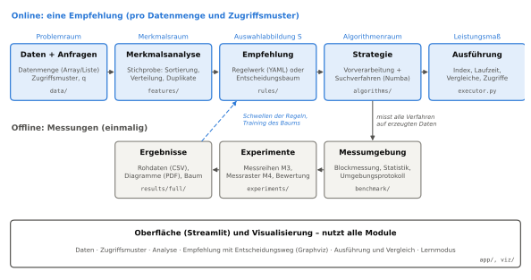

So ist es aufgebaut
Das Tool folgt dem Rahmen der Algorithmenauswahl nach Rice: Aus den Daten und Anfragen (Problemraum) werden Merkmale bestimmt, eine Auswahlabbildung wählt daraus eine Strategie (Algorithmenraum), und deren Ausführung wird gemessen (Leistungsmaß).
Architektur

Oben der Weg einer Empfehlung, darunter die Messungen, aus denen die Regeln stammen, unten die Oberfläche.
Die Bausteine
| Baustein | Aufgabe |
|---|---|
Daten und Anfragensrc/recommender/data/ | Erzeugt Datenmengen mit gezielten Eigenschaften (Größe, Verteilung, Sortierung, Duplikate, Array oder verkettete Liste) und Suchanfragen mit Trefferquote und Zielposition. |
Merkmalsanalysesrc/recommender/features/ | Schätzt auf einer Stichprobe: Sind die Daten sortiert? Wie gleichmäßig sind sie verteilt? Gibt es Duplikate? Misst dabei die eigenen Kosten. Dazu eine exakte Sortierprüfung in O(n). |
Suchverfahrensrc/recommender/algorithms/ | Acht Verfahren für Arrays und zwei für Listen, alle mit Numba kompiliert. Jedes ist einmal geschrieben und zweimal übersetzt: mit Zählern für Vergleiche und ohne Zähler für faire Zeitmessungen. |
Empfehlungsrc/recommender/rules/ | Zwei austauschbare Selektoren: das Regelwerk (Entscheidungsgraph in rules.yaml, jede Regel mit Begründung und Quelle) und ein gelernter Entscheidungsbaum. Beide liefern Strategie, Begründung und Entscheidungsweg. |
Ausführungsrc/recommender/executor.py | Führt eine Strategie samt Vorbereitung aus (Sortierprüfung, Sortieren, Hashtabelle) und misst Zeit, Vergleiche und Zugriffe. |
Messumgebungsrc/recommender/benchmark/ | Blockmessung, verworfene Aufwärmläufe, wechselnde Eingaben, robuste Statistik (Median, Bootstrap-Konfidenzintervall) und ein Protokoll der Messumgebung in jeder Ergebnisdatei. |
Experimenteexperiments/ | Messreihen zu jedem Merkmal, das Messraster aller Kombinationen und die Bewertung der Selektoren. Ergebnisse als CSV und PDF in results/full/. |
Oberflächeapp/ | Die Streamlit-App: Präsentation (Überblick, Geschichten), das Werkzeug in fünf Schritten und der Lernmodus. |
Wie das Regelwerk entsteht
- Messreihen: Jedes Merkmal wird einzeln variiert (Datengröße, Verteilung, Duplikate, Zugriffsmuster, Speicherstruktur), jeweils mit 30 Wiederholungen.
- Break-even-Punkte: Aus den Messungen folgt, ab wie vielen Anfragen sich Vorbereitung lohnt, z. B. eine Hashtabelle nach etwa 7 bis 34 kompletten Durchläufen der linearen Suche.
- Regeln: Diese Schwellen stehen mit Begründung und Quelle im Regelwerk. Kostenlose Merkmale wie Größe und Angaben zu den Anfragen werden zuerst abgefragt, die Stichprobe nur bei Bedarf.
- Messraster: 540 Datenmengen mit je drei Zugriffsmustern, aufgeteilt in eine Kalibrierungs- und eine Testhälfte. Bewertet wird nur auf der Testhälfte (11.550 Fälle).
- Vergleich: Ein Entscheidungsbaum (scikit-learn, Tiefe 4) lernt dieselbe Aufgabe aus den Messdaten. Ohne Analysekosten sind beide gleich gut, mit Analysekosten gewinnt das Regelwerk, weil es die Stichprobe seltener braucht.
Selbst ausprobieren
Lokal mit echten Messwerten des eigenen Rechners:
python3 -m venv .venv && source .venv/bin/activate
pip install -r requirements.txt
streamlit run app/streamlit_app.py